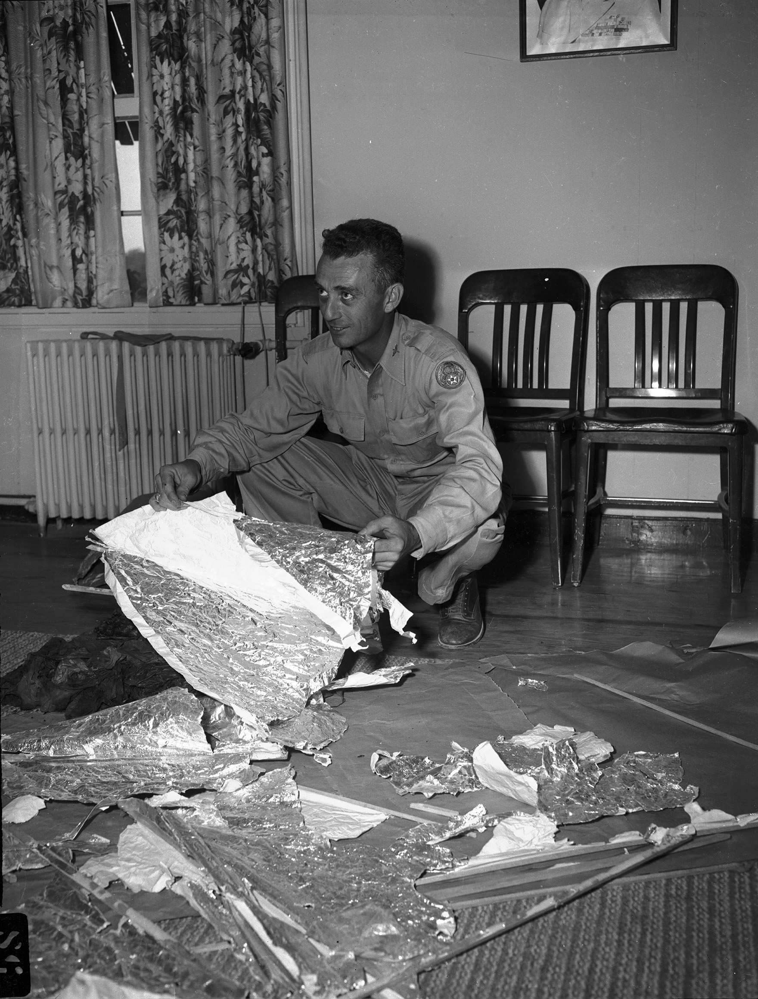
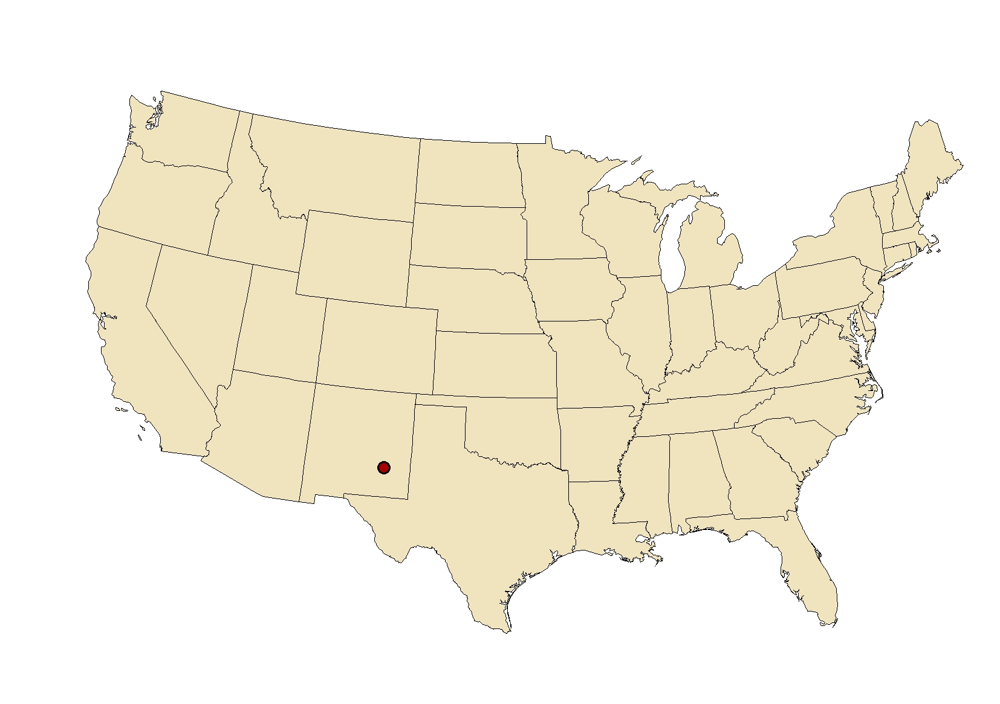
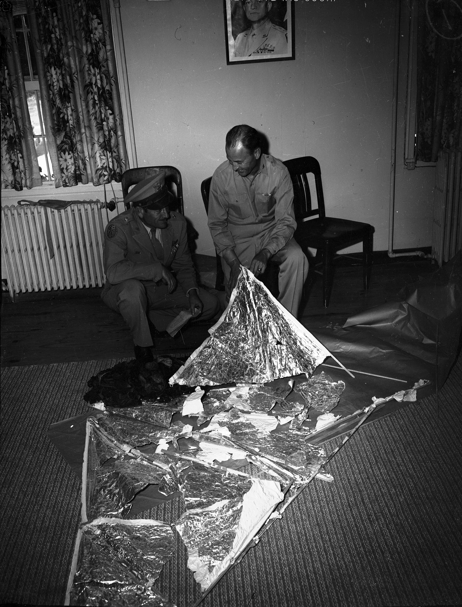

Zusammenfassung
Am 4. Juni 1947 starteten Forscher von der Alamogordo Army Air Field einen klassifizierten Überwachungsballon als Teil des Project Mogul — einem geheimen Programm zur Erkennung sowjetischer Atomtest-Detonationen. Wenige Tage später verlor das Ballonsystem den Kontakt in der Nähe des Grundstücks des Ranchers W.W. "Mac" Brazel bei Corona, New Mexico. Brazel entdeckte metallische und Gummitrümmer über mehrere Hektar verstreut und meldete dies am 5. Juli 1947 den lokalen Behörden.


Die Trümmer wurden von Personal des Roswell Army Air Field (RAAF) eingesammelt, darunter Major Jesse Marcel, und zum Fort Worth transportiert. Am 8. Juli 1947 gab RAAF eine Pressemitteilung aus, die vom Besitz einer "fliegenden Scheibe" berichtete - ein Anspruch, der unmittelbar von Höhergestellten zurückgenommen wurde. Die darauf folgende "Wetterballon"-Erklärung verbarg die wahre geheime Natur der Trümmer, die zu Project Mogul gehörten.
Die militärische Reaktion
Die unmittelbare Reaktion der Militärbehörden war zügig und strategisch. Nachdem die Trümmer eingesammelt wurden, folgten widersprüchliche öffentliche Aussagen, die ein klassisches Muster der Informationskontrolle zeigen:

Zeitleiste des Vorfalls
- 4. Juni 1947: Project Mogul Ballonzug von der Alamogordo Army Air Field gestartet. Kontakt verloren etwa 17 Meilen vom Zielbereich bei Corona, New Mexico.
- Ende Juni 1947: Rancher Mac Brazel entdeckt Aluminiumfolie, Gummi, Klebeband und Holzbalken, die über mehrere Hektar seines Grundstücks verstreut sind.
- 5. Juli 1947: Brazel, der sich des "fliegenden Scheibe"-Medienhype nicht bewusst ist, kontaktiert Sheriff George Wilcox nach seinem Besuch in Corona. Wilcox kontaktiert RAAF.
- 6. Juli 1947: Major Jesse Marcel und Captain Sheridan Cavitt bergen Trümmer vom Grundstück.
- 8. Juli 1947, 14:26 Uhr: RAAF-Informationsoffizier Walter Haut gibt Pressemitteilung mit Meldung der "fliegenden Scheibe"-Bergung aus. Nachricht verbreitet sich innerhalb von Stunden landesweit.
- 8. Juli 1947, Abend: General Roger Ramey hält Pressekonferenz in Fort Worth und identifiziert Trümmer als "Wetterballon". Medien verlieren innerhalb von 24 Stunden das Interesse.
Die Wahrheit über die Trümmer
Alle Zeugenaussagen über die Trümmer entsprechen genau den Project Mogul-Materialien. Die gesamte Luftwaffenuntersuchung der 1990er Jahre verfolgte jeden einzelnen Fund auf eine klassifizierte Radarreflektorboje zurück.
- Metallische Folie: Aluminiumgestützte Radarreflektor-Ziele für Ballonverfolgung
- Gummistreifen: Ballonhüllenmaterial und Neoprenkomponenten
- Holzbalken: Holzgitterwerk-Tragkonstruktion für Ausrüstungspods
- Klebeband mit Symbolen: Spielzeugerherstellungs-Markierungen, nicht außerirdische Schriftzeichen
Die Verschwörungserzählung: Wie aus Geheimhaltung Mythos wurde
Nach 1947 blieb die Geschichte drei Jahrzehnte lang unklar, bis:
- 1978-1980: Ufologe Stanton Friedman interviewt Jesse Marcel; Marcel widerruft Wetterbalon-Erklärung nach 31 Jahren.
- 1980: Berlitz und Moore veröffentlichen Das Roswell Incident, führen unbegründete Behauptungen über außerirdische Körper ein.
- 1984: Gefälschte "Majestic-12"-Dokumente - später als Fälschungen mit Stilfehlern und kopierten Signaturen entlarvt.
- 1989: Glenn Dennis behauptet, von Krankenschwester überwachte Alien-Autopsie; gibt später zu, den Namen erfunden zu haben.
- 1995: Ray Santillis "Alien Autopsy"-Film; später von Santilli selbst (2006) als Londoner Hoax zugegeben.
Sourkraut-Briefing Fazit
Das Roswell-Incident ist das absolute Lehrbuchbeispiel für einen Fall, der nicht wegen echter Geheimnisse, sondern wegen einer initial sauberen Lüge zu einer Verschwörungslegende wurde. Die Luftwaffe log über Project Mogul, schuf damit ein Vakuum, und drei Jahrzehnte später füllte jeder mit der wildesten Fantasie dieses Vakuum aus. Das ist nicht die Art Geschichte, die man einem UFO-Skeptiker erzählt, um ihn zu überzeugen - das ist die Geschichte, die man erzählt, um zu zeigen, wie Mythen entstehen.